Planeta de Mann
El mundo del que seguían llegando datos alentadores: un páramo de hielo bajo nubes tan frías que son sólidas. Pero los datos eran una mentira, y el astronauta que espera ahí cambia el rumbo de toda la película.
Qué es
Un planeta helado que orbita Gargantúa lejos, mucho más lejos que Miller. Lo que se ve al llegar es hielo y roca hasta el horizonte bajo una luz plana, sin sol a la vista y sin un solo rastro de vida. El aire es casi todo amoníaco: irrespirable, y con el suficiente frío como para que las nubes estén congeladas —masas suspendidas, sólidas, sobre las que la tripulación llega a caminar.
No hay tierra prometida abajo. Los sensores no encuentran nada que sirva para quedarse. Y sin embargo, durante años, de Mann seguían llegando señales de que su mundo era el mejor candidato de los tres. Esa contradicción —un páramo que dice ser un hogar— es todo el planeta.
En la historia
Después de perder años en Miller, la tripulación tiene que elegir entre Mann y Edmunds. Eligen Mann porque su baliza nunca dejó de transmitir datos positivos y porque ahí espera, en hibernación, el doctor Mann: el astronauta más condecorado de la misión Lázaro, el hombre que convenció a todos de partir.
Cuando lo despiertan, se quiebra de emoción. Los guía por el hielo, habla del deber y del sacrificio… y en cuanto puede, intenta matar a Cooper: le raja el visor de un golpe y lo deja tirado en la nieve. Mann falseó sus propios datos para que alguien viniera a rescatarlo. No había nada que colonizar; solo un hombre que no quería morir solo.
Su plan de robar la Ranger y quedarse con la Endurance termina peor: en el acoplamiento manual fuerza una escotilla que no está sellada, y la explosión descompresiva lo mata y deja la nave girando sin control. Lo que sigue —Cooper acoplándose a pulso a un anillo que rota— es consecuencia directa de su mentira.
Rasgos distintivos
- Superficie de hielo y roca, con frío extremo y una atmósfera de amoníaco que no se puede respirar.
- Nubes congeladas: estructuras sólidas suspendidas sobre el suelo, lo bastante firmes para pisarlas.
- Habitabilidad aparente: los datos lo marcaban como el mejor de los tres candidatos… porque alguien los falseó.
- Ni vida ni recursos en la zona explorada; los sensores no encuentran nada aprovechable.
- El campamento de Mann y su cápsula de hibernación: el único rastro humano, y una trampa.
- El acoplamiento fallido a la Endurance: la explosión que deja la nave girando y fuerza la maniobra a pulso de Cooper.
En celuloide
La bajada al hielo, el doctor Mann y el acoplamiento en una tira que desfila sin cortes; el cursor o el foco la frenan para mirarla de cerca.

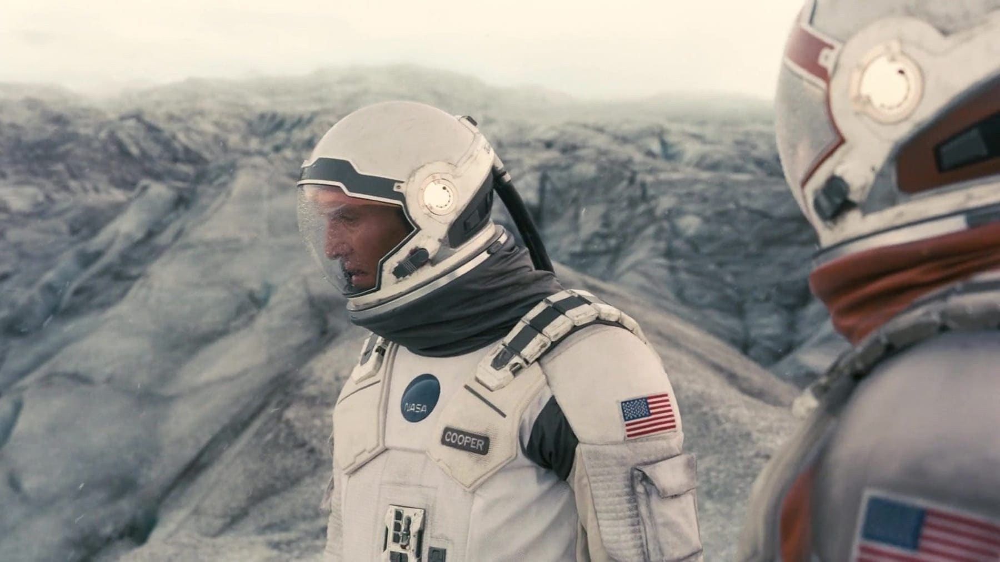
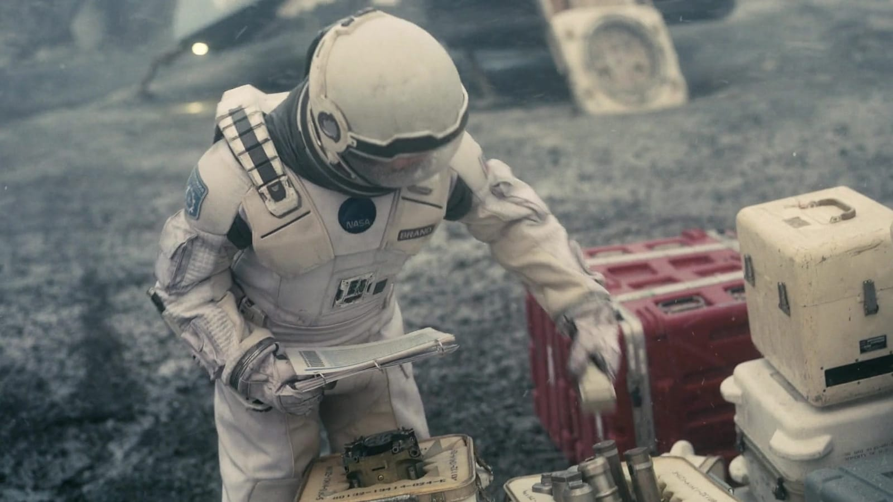
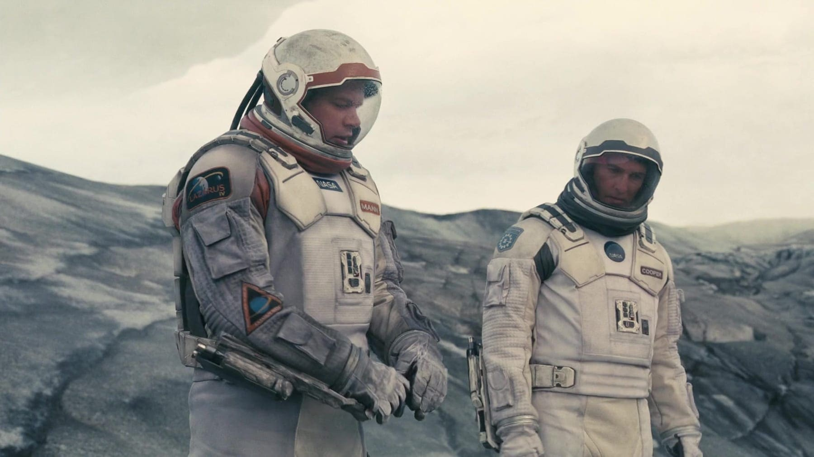
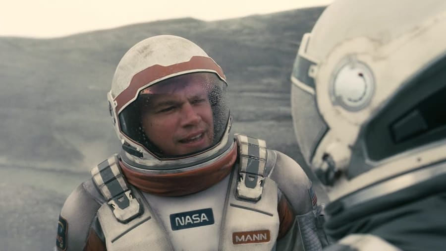
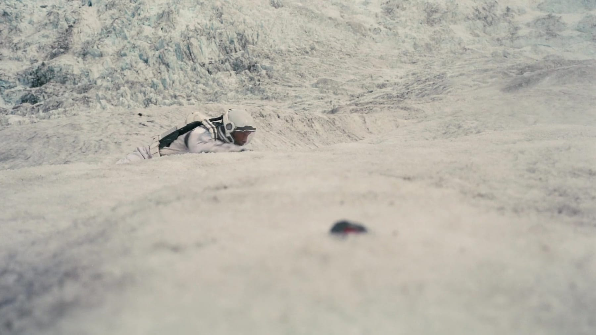
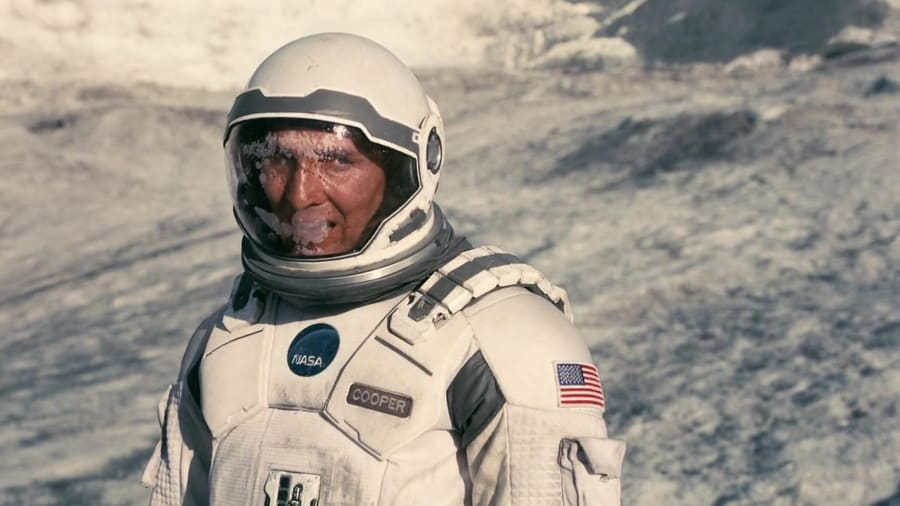
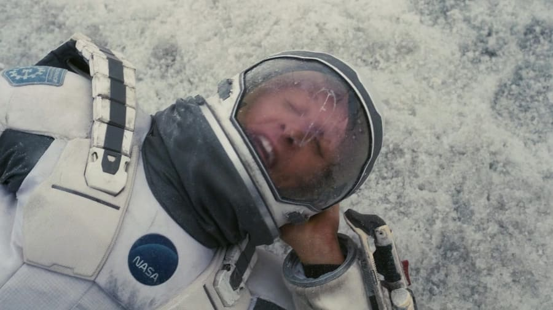
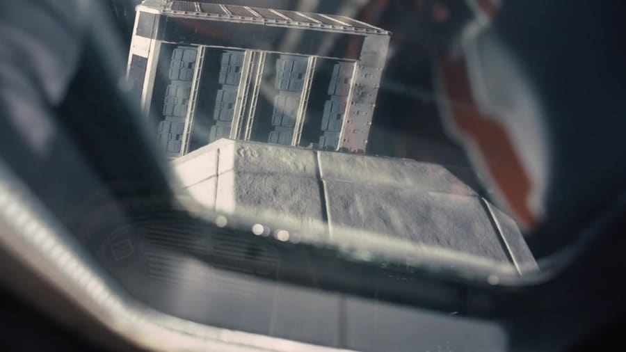
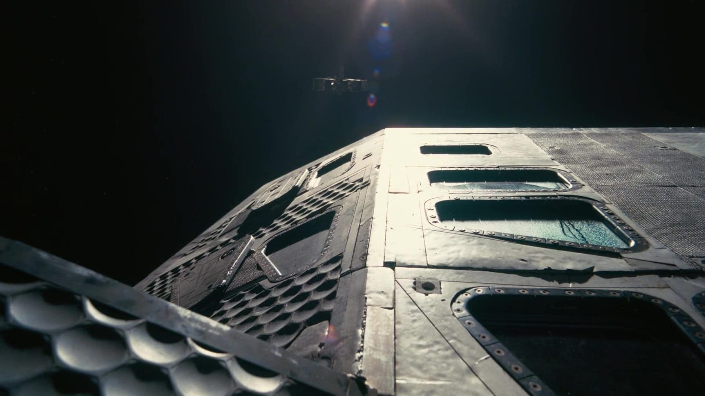
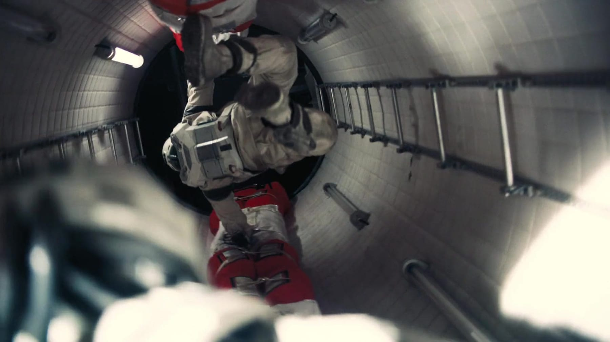
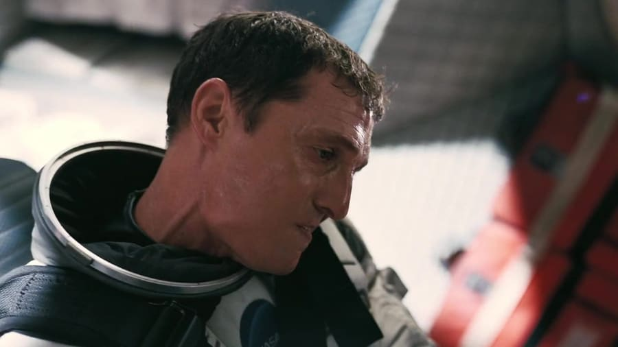
La ciencia
Mann orbita Gargantúa mucho más lejos que Miller, así que su dilatación temporal es despreciable: la tripulación puede quedarse ahí sin "perder" años contra la Tierra. Ese detalle es lo que hace que la elección tenga sentido después del desastre de Miller.
Es también el mundo con menos anclaje en física real de la película. Unas nubes de hielo lo bastante sólidas como para caminar sobre ellas no tienen equivalente conocido: hace falta un aire denso y muy frío, y aun así el resultado es una licencia. Kip Thorne lo dejó pasar porque lo importante ahí no es el planeta, es la gente: Mann es un experimento sobre qué hace el instinto de supervivencia con un buen hombre.